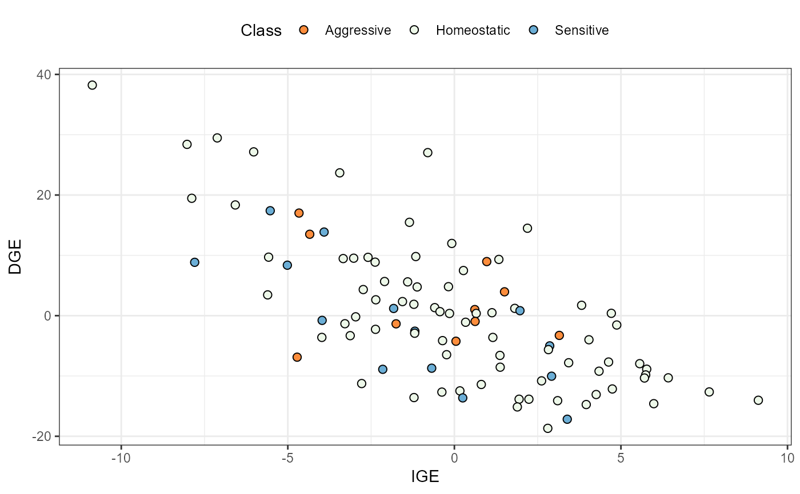
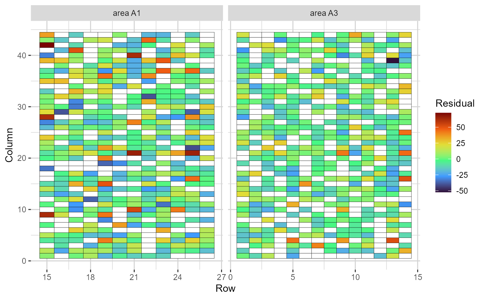
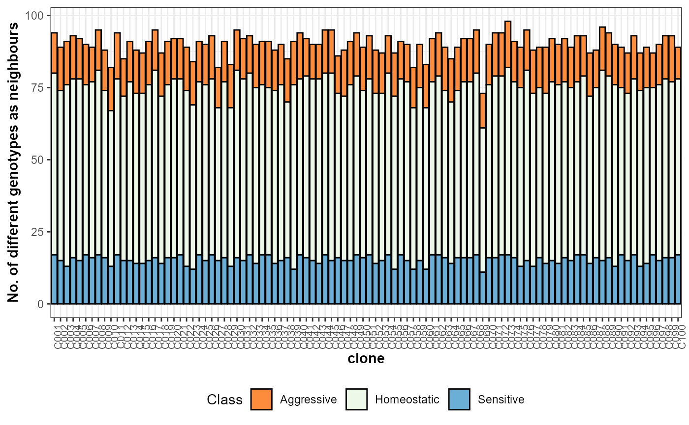
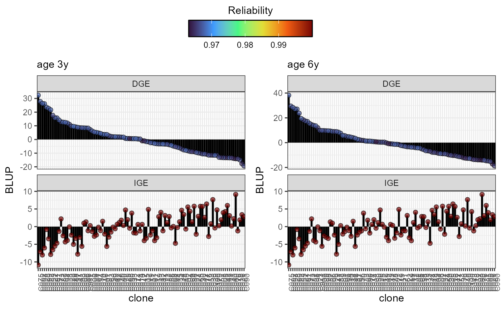
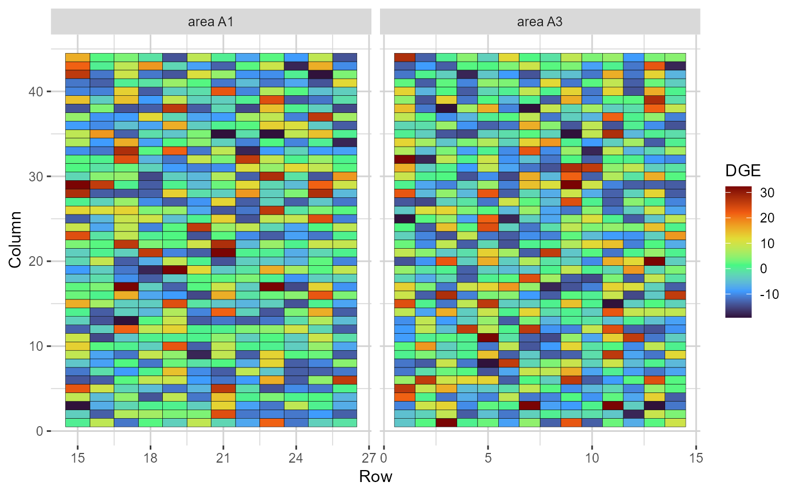
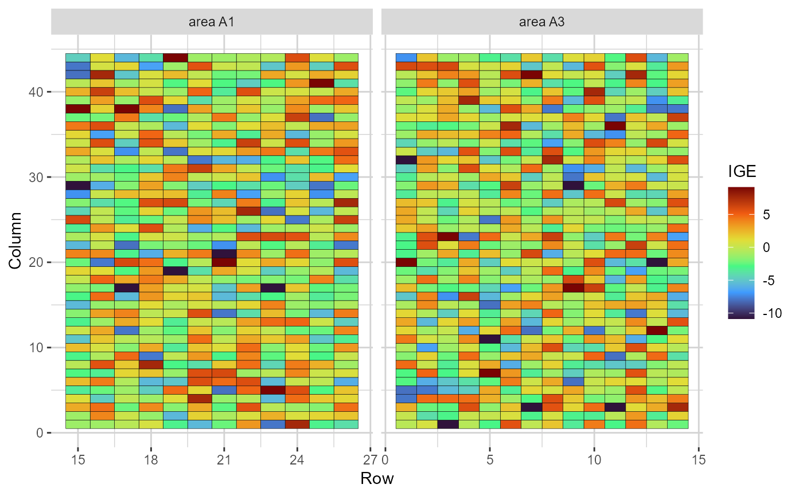
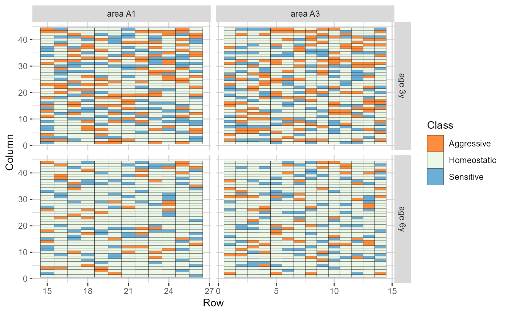
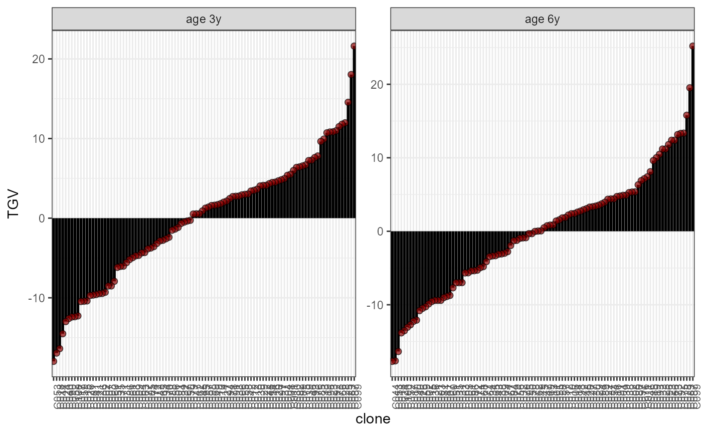

Build plots using the outputs stored in the comresp object.
# S3 method for class 'comresp'
plot(x, ..., category = "DGE.IGE", level = "main", age = "all")An object of class comresp.
Currently not used.
A string indicating which plot to build. See options in the Details section.
Available if a multi-age model was fitted. A string indicating the information level to be used for building
the plots. Options are "main" for focusing on the main effects, or "within" to
focus on the within-age effects effects (main + interaction effects). Defaults
to "main", which also serves when data has a single age.
Available if a multi-age model was fitted. If level = 'within', a string indicating if plots should be built per age.
Options are "all" for plotting all ages, or the name of a specific age. Defaults
to "all", which serves when data has a single age.
The available options are:
class: a density plot with the IGE distribution. The area within the
distribution is filled according to the competition class.
DGEvIGE: a scatter plot illustrating the relation between IGE (x-axis)
and DGE (y-axis). The dots are coloured according to the competition class
DGE.IGE: lollipop plots representing the DGE and IGE of each genotype. The plots
are in descending order according to the DGE. The dots' colour depicts the DGE's and IGE's
reliability of each genotype.
TGV: lollipop plots with the TGV of each genotype, in increasing order.
nneigh: a bar plot depicting the number of different genotypes as neighbours
(total and per competition class) of each selection candidate. Available only for
objects of class comresp, comprepfor.
grid.res: a heatmap representing the grid. The cells are filled according
to the residual value of each plot.
grid.dge: a heatmap representing the grid. The cells are filled according
to the DGE value of each genotype.
grid.ige: a heatmap representing the grid. The cells are filled according
to the IGE value of each genotype.
grid.class: a heatmap representing the grid. The cells are filled according
to the competition class of each genotype.
ggplot2, resp
# \donttest{
library(gencomp)
comp_mat = prepfor(data = euca, gen = 'clone', area = 'area',
plt = 'tree', age = 'age', row = 'row', col = 'col',
dist.col = 3, dist.row = 2, trait = 'MAI', method = 'SK',
n.dec = 3, verbose = FALSE, effs = c("block"))
model = asr_ma(prep.out = comp_mat,
fixed = MAI~ age,
random = ~ block:age,
lrtest = TRUE,
spatial = TRUE,
cor = TRUE,
maxit = 20)
#> ASReml Version 4.2 21/01/2025 18:21:33
#> LogLik Sigma2 DF wall
#> 1 -5695.638 1.0 1645 18:21:33 ( 4 restrained)
#> 2 -5632.490 1.0 1645 18:21:34 ( 5 restrained)
#> 3 -5562.100 1.0 1645 18:21:34 ( 3 restrained)
#> 4 -5515.785 1.0 1645 18:21:34 ( 2 restrained)
#> 5 -5489.058 1.0 1645 18:21:35 ( 1 restrained)
#> 6 -5461.928 1.0 1645 18:21:35 ( 1 restrained)
#> 7 -5447.018 1.0 1645 18:21:35
#> 8 -5442.411 1.0 1645 18:21:35
#> 9 -5441.232 1.0 1645 18:21:36
#> 10 -5441.178 1.0 1645 18:21:36
#> 11 -5441.176 1.0 1645 18:21:36
#> ====> Starting likelihood ratio tests
#> ASReml Version 4.2 21/01/2025 18:21:36
#> LogLik Sigma2 DF wall
#> 1 -5567.226 1.0 1645 18:21:37 ( 1 restrained)
#> 2 -5502.968 1.0 1645 18:21:37 ( 3 restrained)
#> 3 -5479.250 1.0 1645 18:21:38 ( 1 restrained)
#> 4 -5460.279 1.0 1645 18:21:38 ( 1 restrained)
#> 5 -5453.254 1.0 1645 18:21:38 ( 1 restrained)
#> 6 -5450.791 1.0 1645 18:21:38 ( 1 restrained)
#> 7 -5449.892 1.0 1645 18:21:39
#> 8 -5449.753 1.0 1645 18:21:39
#> 9 -5449.751 1.0 1645 18:21:39
#> ASReml Version 4.2 21/01/2025 18:21:39
#> LogLik Sigma2 DF wall
#> 1 -5596.539 1.0 1645 18:21:40 ( 1 restrained)
#> 2 -5528.593 1.0 1645 18:21:40 ( 3 restrained)
#> 3 -5496.563 1.0 1645 18:21:40 ( 1 restrained)
#> 4 -5469.550 1.0 1645 18:21:40 ( 1 restrained)
#> 5 -5457.877 1.0 1645 18:21:40 ( 1 restrained)
#> 6 -5453.135 1.0 1645 18:21:41 ( 1 restrained)
#> 7 -5451.147 1.0 1645 18:21:41
#> 8 -5450.770 1.0 1645 18:21:41
#> 9 -5450.762 1.0 1645 18:21:41
#> ASReml Version 4.2 21/01/2025 18:21:41
#> LogLik Sigma2 DF wall
#> 1 -5538.532 1.0 1645 18:21:42
#> 2 -5501.241 1.0 1645 18:21:42 ( 2 restrained)
#> 3 -5479.725 1.0 1645 18:21:42 ( 1 restrained)
#> 4 -5466.675 1.0 1645 18:21:42
#> 5 -5455.535 1.0 1645 18:21:42
#> 6 -5450.825 1.0 1645 18:21:42
#> 7 -5449.790 1.0 1645 18:21:43
#> 8 -5449.751 1.0 1645 18:21:43
#> 9 -5449.751 1.0 1645 18:21:43
#> ASReml Version 4.2 21/01/2025 18:21:43
#> LogLik Sigma2 DF wall
#> 1 -5683.330 1.0 1645 18:21:43 ( 1 restrained)
#> 2 -5604.604 1.0 1645 18:21:44 ( 2 restrained)
#> 3 -5565.312 1.0 1645 18:21:44 ( 2 restrained)
#> 4 -5541.890 1.0 1645 18:21:44 ( 2 restrained)
#> 5 -5527.033 1.0 1645 18:21:44 ( 1 restrained)
#> 6 -5512.722 1.0 1645 18:21:45 ( 1 restrained)
#> 7 -5506.215 1.0 1645 18:21:45
#> 8 -5504.876 1.0 1645 18:21:45
#> 9 -5504.665 1.0 1645 18:21:45
#> 10 -5504.661 1.0 1645 18:21:45
#> ASReml Version 4.2 21/01/2025 18:21:45
#> LogLik Sigma2 DF wall
#> 1 -5573.612 1.0 1645 18:21:46
#> 2 -5532.774 1.0 1645 18:21:46 ( 2 restrained)
#> 3 -5509.337 1.0 1645 18:21:46
#> 4 -5489.122 1.0 1645 18:21:46
#> 5 -5480.358 1.0 1645 18:21:46
#> 6 -5478.228 1.0 1645 18:21:46
#> 7 -5478.111 1.0 1645 18:21:47
#> 8 -5478.108 1.0 1645 18:21:47
#> ====> LRT results:
#> effect LR-statistic Pr(Chisq)
#> 1 DGE 1.098212e+02 0.000000e+00
#> 2 IGE 5.671546e+01 2.520206e-14
#> 3 DGE:age 2.022865e+00 7.747327e-02
#> 4 IGE:age -9.514352e-05 5.000000e-01
results = resp(prep.out = comp_mat, model = model, weight.tgv = FALSE, sd.class = 1)
plot(results, category = 'DGEvIGE', level = 'within', age = '6y')

plot(results, category = 'grid.res', level = 'main', age = '3y')

plot(results, category = 'nneigh', level = 'main')

plot(results, category = 'DGE.IGE', level = 'within', age ='all')

plot(results, category = 'grid.dge', level = 'within', age ='3y')

plot(results, category = 'grid.ige', level = 'within', age ='6y')

plot(results, category = 'grid.class', level = 'within', age ='all')

plot(results, category = 'class', level = 'main')

plot(results, category = 'TGV', level = 'within')

# Note that the ages are labelled as "3y" and "6y" in the example dataset
# }